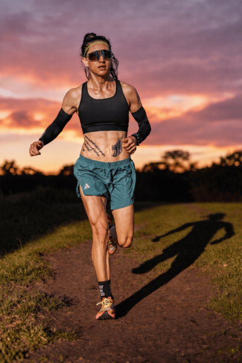

TREINÃO LORD
ULTRA RUN
Desafie seus limites em um percurso raiz na terra.
09 de Maio • 2026 • Votuporanga - SP
Data & Hora
Sáb, 09 de Maio de 2026 • 17:30
Ponto de Encontro
Em frente à Lord Lion
Desafie seus limites em um percurso raiz na terra.
09 de Maio • 2026 • Votuporanga - SP
Data & Hora
Sáb, 09 de Maio de 2026 • 17:30
Ponto de Encontro
Em frente à Lord Lion
A superfície macia da terra reduz o estresse nas articulações, permitindo treinos mais longos e recuperação acelerada.
Desenvolva equilíbrio e consciência corporal superior correndo em terrenos irregulares e dinâmicos.
Ative grupos musculares estabilizadores que o asfalto ignora, construindo uma base de força inabalável.

Em frente à Lord Lion
Votuporanga -
SP
Concentração: 17h30
Largada: 18h00
Trilha na terra raiz
Lord Ultra
Run
"A corrida na terra não é apenas sobre velocidade, é sobre resiliência mental e conexão com cada passo."
A assessoria Karina Franzin é focada em extrair o seu melhor, unindo técnica, força e comunidade. Venha sentir essa energia no nosso treinão.
Entre para o Clube Movimento Ultra Lord no Strava

A recompensa para quem dominou a trilha. Confraternização e o ambiente perfeito para celebrar sua conquista na Lord Lion. Entrada gratuita para os atletas.
Reserve via WhatsAppConfirme seu "Vou" no Strava e entre para o clube oficial para acompanhar percursos e desafios.
Vai participar do Treinão e quer garantir seu lugar para o pós-treino na Lord Lion? Entre em contato agora pelo WhatsApp.
RESERVAR VIA WHATSAPPContato: (17) 99723-6693